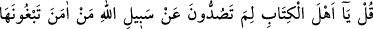
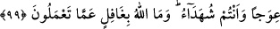
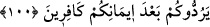

99. De ki: Ey ehl-i kitap! (Gerçeği) görüp bildiğiniz halde niçin Allah’ın yolunu
eğri göstermeye yeltenerek mü’minleri Allah yolundan çevirmeye kalkışıyorsunuz?
Allah yaptıklarınızdan habersiz değildir.
“De ki: Ey kitap ehli, niçin insanları Allah’ın yolundan” ebedî saâdete ulaştıran
gerçek dîninden -ki bu tevhid ve İslâm dinidir- “çeviriyorsunuz”, döndürüyorsunuz?
Kitap ehli, mü’minlere fitne verip onları İslâm’dan çevirmek için çeşitli çareler ararlar;
İslâm’a girmek isteyenleri, büyük bir gayret sarfederek bundan men ederlerdi.
Kitaplarında ne Hz. Peygamber (s.a.)’in sıfatlarının, ne de peygamber olacağına dâir bir
müjdenin olduğunu söylerlerdi.
“Allah’ın yolunu, eğri göstermeyi isteyerek,” ifadesi en doğru yol olan Allah’ın
yolunda eğrilik, yamukluk arıyorsunuz, demektir. Hz. Mûsâ’nın şerîatı neshedilmemiştir,
diyerek, Hz. Peygamber (s.a.)’in sıfatlarını değişik göstererek, benzeri yollara
başvurarak insanların zihinlerini bulandırıyorsunuz. İslâm’da bir bozukluk olduğunu
tevehhüm ettiriyor ve İslâm’ın istikâmet ve doğruluktan uzak olduğunu hissettirmeye
çalışıyorsunuz.
“Eğrilik” anlamına gelen (
) kelimesi ayn harfinin fethasi ile avec, kesresi ile ıvec
şekillerinde okunabilir. Fakat “ıvec” şeklinde ayn meksûr olduğunda mânevî şeylerdeki
eğrilik anlaşılır. Meselâ; onun dîninde ve kelâmında “ıvec” vardır, denilir. “Avec”
şeklinde okunduğunda ise maddî şeylerdeki eğrilik kasdedilir. Meselâ, duvarda, ağaçta
ve su arkında “avec” vardır, denilir.
“Gerçeği görüp bildiğiniz halde” bu dînin, etrafında hiçbir eğrilik şâibesi
bulunmadığını bildiğiniz ve insanları bu dinden çevirmenin bir hakkın ihlali demek
olduğunu görüp bilen, şahitler olduğunuz halde, bu dinde eğrilik arayarak inananları
çevirmek istiyorsunuz.
Allah, Hz. Peygamber’e şahitlik etmemek ve Allah yolundan çevirmek gibi
fiillerinizden habersiz değildir.
Allah Teâlâ, kitap ehlini, inananları yollarından çevirmelerinden dolayı azarlayınca,
mü’minleri de bu fitnecilere tâbi olmaktan men ederek şöyle buyuruyor:
100. Ey îman edenler! Kendilerine kitap verilenlerden bir guruba uyarsanız